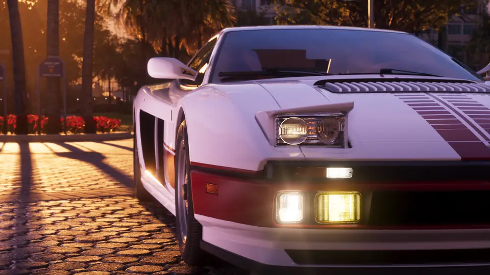
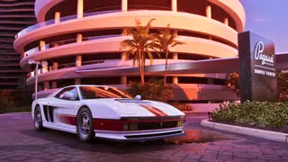
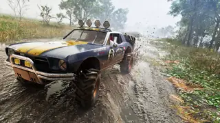
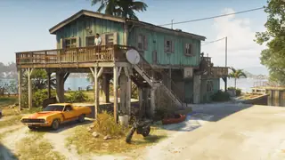
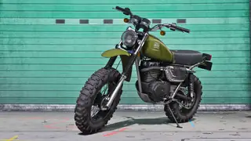
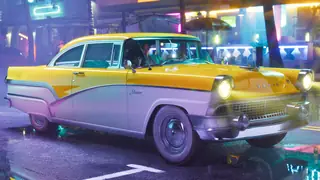
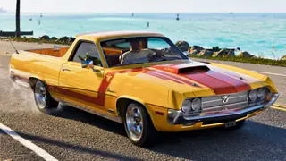

GTA 6 : liste des véhicules confirmés (voitures, motos, bateaux)

En bref : voici les véhicules de GTA 6 confirmés par Rockstar avant la sortie. Filtre par type ou par édition. La liste grandit dès le 19 novembre, chaque ajout avec sa source.

Grotti Cheetah ’95
Voiture de sportÉdition Ultimate
La sportive des années 90 de Grotti, en livrée rétro-futuriste épurée. Rockstar précise qu'elle se débloque plus tard dans l'histoire.

Vapid Dominator Buggy ’67
Tout-terrainÉdition Ultimate
Buggy du Mud Club taillé pour les pistes du mont Kalaga. Livré avec le Paradise Garage de Watson Bay (casier d'armes et dépôt d'objets volés à revendre).

Dinka Enduro
MotoÉdition Ultimate
Moto tout-terrain aux couleurs treillis militaire, rangée à la planque de Jason.

Crest Kayak
BateauÉdition Ultimate
Kayak disponible à la planque de Jason, pour se balader au calme sur l'eau.
Shitzu Squalo
BateauÉdition Ultimate
Bateau rapide en dégradé rose et bleu, amarré à Washington Beach, pensé pour la pêche à Gambit Bay. Livré avec une caisse d'armes explosives.

Vapid Stanier ’55
BerlineBonus précommande
Berline bicolore des années 50, avec un garage à côté d'Ocean Beach. Fait partie du Vintage Vice City Pack offert en précommande.

Vapid Ganado
Pick-upJeu de base
Le pick-up surbaissé et usé de Jason. L'Édition Ultimate ajoute un kit de modifications « Retro Build » plus musclé.
Comment on construit cette liste
On n'ajoute un véhicule que s'il est nommé par une source officielle (site de Rockstar, Newswire) ou vérifié en jeu après la sortie. Pas de rumeurs, pas de noms tirés de fuites. Tu veux savoir quoi prendre entre les deux éditions ? Lis Standard ou Ultimate.
Questions fréquentes
Combien de véhicules y a-t-il dans GTA 6 ?
Rockstar n'a pas donné de chiffre. Cette liste ne contient que les véhicules confirmés par une source officielle ; elle s'agrandit dès la sortie du 19 novembre.
Quelles voitures sont réservées à l'édition Ultimate ?
La Grotti Cheetah de 1995, le Vapid Dominator Buggy de 1967, la moto Dinka Enduro, le kayak Crest et le bateau Shitzu Squalo, selon la page officielle de l'édition.
Comment avoir la Vapid Stanier dans GTA 6 ?
Elle fait partie du Vintage Vice City Pack, offert pour toute précommande du jeu.
Sources
À lire aussi
Date, heure de sortie, prix et plateformes
GTA 6 sort le 19 novembre 2026 sur PS5 et Xbox Series X|S. Heure de sortie en France, Belgique, Suisse et Québec, prix des éditions, préchargement.
Standard ou Ultimate : laquelle prendre ?
Tout le contenu de l'édition Ultimate de GTA 6 (79,99 € contre 99,99 €) : voitures, armes, boutiques exclusives, mission spéciale. Notre avis pour choisir.
Bonus de précommande : Vintage Vice City Pack
Le Vintage Vice City Pack, bonus de précommande de GTA 6 : Vapid Stanier ’55 et son garage, tenues années 80 de Jason et Lucia, motif d'arme. Qui l'obtient et comment.
Tous les personnages de GTA 6
Qui sont Jason Duval et Lucia Caminos, les héros de GTA 6 ? Et Cal, Boobie, Dre'Quan, Real Dimez, Raul, Brian ? Les 8 personnages officiels expliqués, sans spoiler.